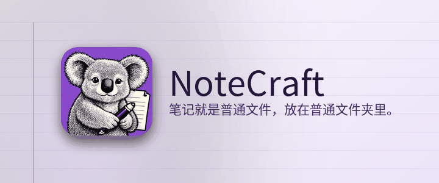

笔记就是普通文件，放在普通文件夹里。
NoteCraft 保存笔记的方式和你保存文件一样：笔记本是一个文件夹，分区是一个文件夹，页面是一个文件夹，里面有一个文件和它的图片。没有任何东西锁在数据库里，所以你的同步工具已经在监视的任何文件夹都能变成同步的笔记本，备份就是一份拷贝。
本分区的每一页都在页面上展示 NoteCraft 的一个部分：
点击这一段的任何位置然后输入。你停下来大约一秒后，页面会自动保存。在行尾按 Enter 开始新段落，按 Escape 离开。
回到起始页。
本页由人工智能模型翻译。欢迎指正。